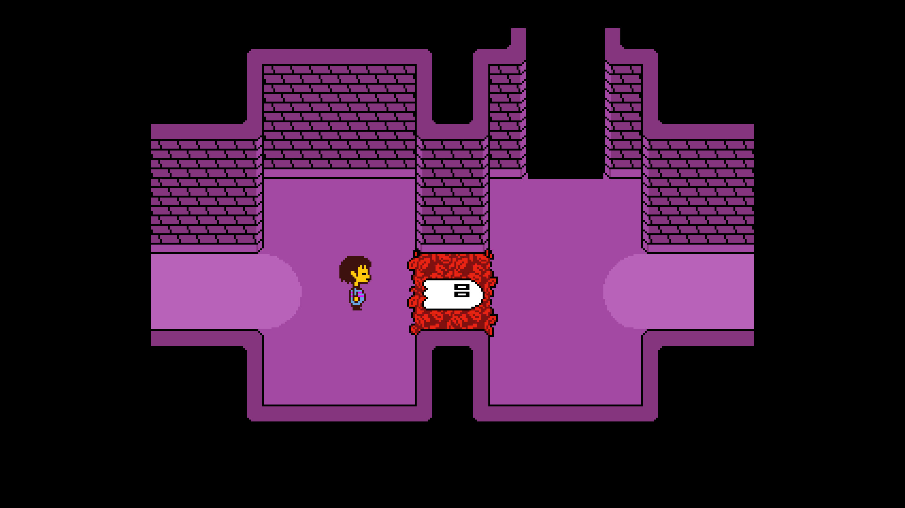
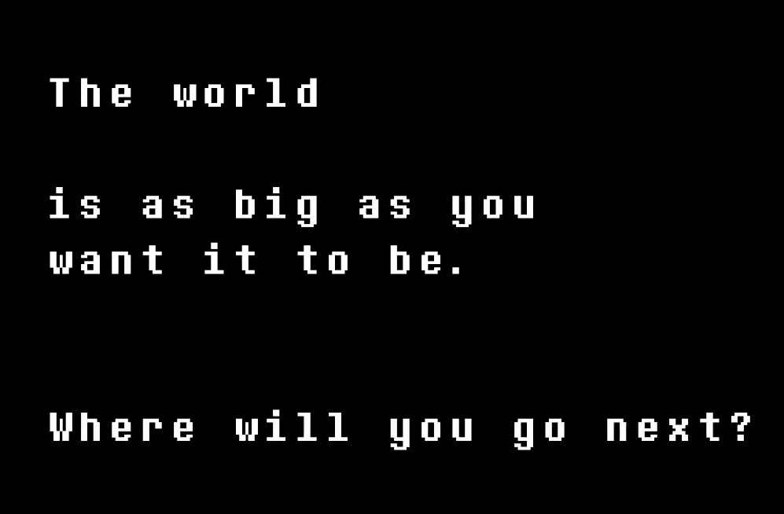

Despite Everything, It's Still You.
15/09/2025
It's 2015. December 23rd, to be exact. I'm sat in front of my PC with my parents in the other room. And I'm crying.
It's 2016. Sometime in May. I'm sitting on the bed with my girlfriend in her flat in Sheffield. And I'm crying.
It's 2017. I'm sitting in my partner's front room. We're eating pizza. And I'm crying.
It's 2022. I'm jumping up and down in the Bodega in Nottingham. Anamanaguchi are playing their last song before the encore. And I'm crying.
It's 2025. I'm sat in a very hot concert hall the day before I'm due to start back at work, two months after major surgery. And I'm crying.
All of these events have one thing in common: Undertale.
Undertale came out ten years ago today. One of the last smash hit indies that would be released before the entire market fractured and changed. It is unlike anything else released that year. Or the previous year, or the next year. The only game that will come close to Undertale is its sequel/prequel/sidequel/something else Deltarune, but even that isn't quite Undertale. Undertale both stands alone and yet will also influence hundreds, if not thousands of games to be released in the next decade.
Undertale is something of a rosetta stone for the last decade of video games. I think if you have any interest in the medium it is a must-play. If you haven't, please stop reading now, as I will be talking in less generic terms after the screenshot here.

Ok, are they gone?
The common thread in those events is Undertale, yeah. But it's more specifically Hopes and Dreams. What a track, huh? I can only really think of two songs that equal it - one from Stormblood, and one from Deltarune, of course. It's a track that really captures the hype of the finale, but it's also melancholic - the main melody, of course, is His Theme. The fight itself at this point is bittersweet. You've SAVEd your friends, you've perservered and stayed determined. The earth refused to die. And all that's left, at the end of everything, is a crying little boy.
I've never replayed Undertale myself. I played it through once in 2015 and then kept the save, safe and backed up on my desktop, for years. But I have watched two partners play through it, and cried at the same points every time.
I can't even listen to the title track without crying. That walk through New Home... there's nothing else like it.
It's bizarre to say, maybe, but I think Toby Fox is a generational talent. One day he'll be spoken of in the same breath as people like Stephen King, David Lynch, Hideo Kojima - incredibly impressive, omni-talented indivduals with singular, totemic vision. I guess that would make Deltarune Fox's Twin Peaks, his MGS3? It's only half-finished and it's far beyond most works in the form. One can only imagine what chapter 5 and on can bring.
But, yeah. Only played once. It feels... kinda wrong to play it again? I never did a No Mercy route either. How could I hurt all these characters I'd grown to love?
And then Deltarune arrived. And one of its many themes is the horror of getting lost in escapism. Why do you care about these characters? Why should you? They're not real, after all. Ralsei even says it to camera.
It's a rarity to see in games, a follow-up so in conversation with its predecessor and with its fanbase. Deltarune chapter 1 retells Undertale, asks why you care, and then, after it's broken you down, dares to ask: "after all that, is it still you?" and plunges you into a new story about finding things long thought lost in the dark.
It's magical. And it wouldn't be possible at all without Undertale; the game would not be able to deliver its gut punch in even close to the same fashion if Undertale hadn't laid all that ground work.
Deltarune, impossibly, makes a once-in-a-generation game even better. If, for some reason, you haven't played Deltarune, this is your sign to do so. It will make Undertale even better for you.
And if you kept reading anyway, despite my warning above: please. Play Undertale. Then play Deltarune. Then DM me so we can go insane together.
At the end of New Home, you reach a house. And in that house, is a mirror. And you look in that mirror, at the end of your journey. And it drops a line that has reverberated through culture ever since.
It's been a decade. But despite everything, it's still you.
Coda:It is 22nd September 2025. I am watching the Undertale 10th Anniversary Stream. Yet again, I am crying at its ending. But I'm crying at so much more, too.
The message of the stream is shouted clearly throughout, but is summarised best with the end card.
Toby Fox is very online. He knows the breadth of mods, fangames and metacontent that exists around his games. And he openly invites everyone to play in the worlds he made, to dance in the margins.
It makes me so happy. Canon doesn't matter. The world is as big as you want it to be. Let's explore it all together.
Happy 10th anniversary, Undertale. You changed my life.